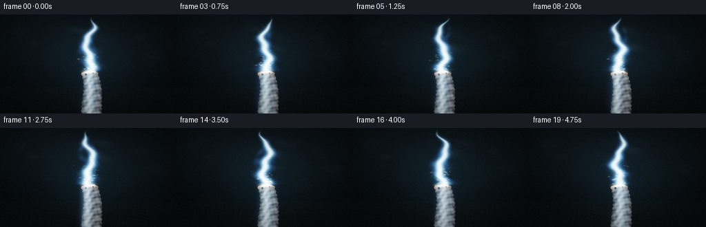
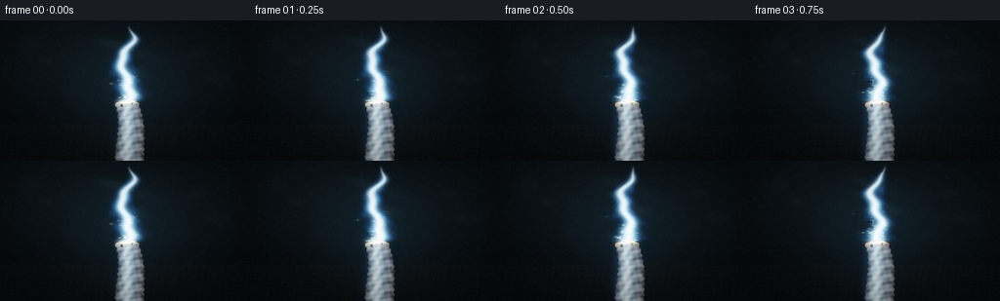

CODING AGENTS AS PIXEL WORLD MODELS
traex/DeepSeek-V4.1-Flash · material_0011
点击播放 · 原生 RGB 像素
逐轮保存的候选
回放视频、检查图与代码变化。
每份候选均可单独播放。实际图片检查记录在下方工具轨迹中。
候选 01播放与检查图
点击播放 · 原生 RGB 像素


展开代码变化
--- 上一保存版本
+++ 本次保存版本
@@ -0,0 +1,379 @@
+"""Procedural renderer for a steadily burning piece of aluminum foil."""
+
+from pathlib import Path
+
+import numpy as np
+from PIL import Image, ImageFilter
+
+import artifact_io
+
+
+CASE_DIR = Path(__file__).resolve().parent
+WIDTH = 256
+HEIGHT = 144
+FRAMES = 20
+FPS = 4.0
+SS = 4
+W = WIDTH * SS
+H = HEIGHT * SS
+
+
+def smoothstep(edge0, edge1, value):
+ value = np.clip((value - edge0) / (edge1 - edge0), 0.0, 1.0)
+ return value * value * (3.0 - 2.0 * value)
+
+
+def blur_rgb(image, radius):
+ channels = []
+ for channel in range(3):
+ channel_image = Image.fromarray(
+ np.clip(image[..., channel] * 255.0, 0, 255).astype(np.uint8)
+ )
+ channels.append(
+ np.asarray(channel_image.filter(ImageFilter.GaussianBlur(radius)), dtype=np.float32)
+ / 255.0
+ )
+ return np.stack(channels, axis=-1)
+
+
+def make_background(xx, yy, t):
+ """Dark workshop macro set with a shallow, softly lit work surface."""
+ horizon = 0.735 + 0.003 * np.sin(xx * 9.0)
+ surface = smoothstep(horizon - 0.012, horizon + 0.012, yy)
+
+ top = np.stack(
+ [
+ 0.018 + 0.012 * (1.0 - yy),
+ 0.027 + 0.017 * (1.0 - yy),
+ 0.033 + 0.020 * (1.0 - yy),
+ ],
+ axis=-1,
+ )
+ bottom = np.stack(
+ [
+ 0.030 + 0.010 * (1.0 - yy),
+ 0.034 + 0.011 * (1.0 - yy),
+ 0.038 + 0.013 * (1.0 - yy),
+ ],
+ axis=-1,
+ )
+ image = top * (1.0 - surface[..., None]) + bottom * surface[..., None]
+
+ # Soft pools of cool studio light and defocused highlights.
+ image += np.stack(
+ [
+ 0.012 * np.exp(-((xx - 0.19) ** 2 / 0.08 + (yy - 0.24) ** 2 / 0.15)),
+ 0.022 * np.exp(-((xx - 0.19) ** 2 / 0.08 + (yy - 0.24) ** 2 / 0.15)),
+ 0.027 * np.exp(-((xx - 0.19) ** 2 / 0.08 + (yy - 0.24) ** 2 / 0.15)),
+ ],
+ axis=-1,
+ )
+ image += np.stack(
+ [
+ 0.009 * np.exp(-((xx - 0.84) ** 2 / 0.05 + (yy - 0.37) ** 2 / 0.13)),
+ 0.015 * np.exp(-((xx - 0.84) ** 2 / 0.05 + (yy - 0.37) ** 2 / 0.13)),
+ 0.019 * np.exp(-((xx - 0.84) ** 2 / 0.05 + (yy - 0.37) ** 2 / 0.13)),
+ ],
+ axis=-1,
+ )
+
+ bokeh = [
+ (0.115, 0.170, 0.040, 0.020, 0.030, 0.032),
+ (0.185, 0.295, 0.026, 0.025, 0.036, 0.030),
+ (0.795, 0.235, 0.033, 0.016, 0.026, 0.034),
+ (0.875, 0.410, 0.048, 0.018, 0.028, 0.032),
+ (0.705, 0.525, 0.020, 0.012, 0.018, 0.020),
+ (0.280, 0.510, 0.025, 0.010, 0.016, 0.019),
+ ]
+ for bx, by, radius, red, green, blue in bokeh:
+ distance = (xx - bx) ** 2 + (yy - by) ** 2
+ disc = np.exp(-distance / (radius * radius))
+ ring = np.exp(-((np.sqrt(distance) - radius * 0.72) / (radius * 0.18)) ** 2)
+ image += np.stack(
+ [
+ (disc * 0.32 + ring * 0.22) * red,
+ (disc * 0.38 + ring * 0.28) * green,
+ (disc * 0.45 + ring * 0.34) * blue,
+ ],
+ axis=-1,
+ )
+
+ # A long, restrained reflection in the graphite work surface.
+ reflection = np.exp(-((xx - 0.505) ** 2 / 0.0018 + (yy - 0.885) ** 2 / 0.0038))
+ image += reflection[..., None] * np.array([0.055, 0.080, 0.095], dtype=np.float32)
+
+ # Very fine surface tooth; the later frame grain supplies the final texture.
+ tooth = (
+ np.sin(xx * 241.0 + yy * 17.0)
+ + np.sin(xx * 77.0 - yy * 193.0)
+ + 0.5 * np.sin(xx * 411.0 + yy * 83.0)
+ ) / 2.5
+ image += tooth[..., None] * surface[..., None] * 0.006
+
+ # Firelight is broad and cool because the flame is mostly white-blue.
+ fire_glow = np.exp(
+ -((xx - 0.510) ** 2 / 0.060 + (yy - 0.470) ** 2 / 0.155)
+ )
+ image += fire_glow[..., None] * np.array([0.028, 0.063, 0.082], dtype=np.float32)
+ return image
+
+
+def foil_mask(xx, yy):
+ top_edge = (
+ 0.582
+ + 0.010 * np.sin(xx * 44.0 + 0.8)
+ + 0.004 * np.sin(xx * 119.0 - 1.4)
+ )
+ center = (
+ 0.505
+ + 0.020 * np.sin((yy - 0.58) * 4.7)
+ + 0.006 * np.sin((yy - 0.58) * 12.5)
+ )
+ half_width = 0.047 + 0.011 * smoothstep(0.58, 1.0, yy)
+ rough_edge = 0.0024 * np.sin(yy * 154.0 + xx * 19.0)
+ body = (
+ (yy > top_edge)
+ & (yy < 1.025)
+ & (np.abs(xx - center) < half_width + rough_edge)
+ )
+
+ # Two small torn notches keep the tip from reading as a manufactured edge.
+ notch_a = ((xx - 0.487) / 0.006) ** 2 + ((yy - 0.606) / 0.011) ** 2 < 1.0
+ notch_b = ((xx - 0.527) / 0.004) ** 2 + ((yy - 0.592) / 0.009) ** 2 < 1.0
+ return body & ~notch_a & ~notch_b
+
+
+def render_foil(xx, yy, t):
+ mask = foil_mask(xx, yy)
+ center = (
+ 0.505
+ + 0.020 * np.sin((yy - 0.58) * 4.7)
+ + 0.006 * np.sin((yy - 0.58) * 12.5)
+ )
+ half_width = 0.047 + 0.011 * smoothstep(0.58, 1.0, yy)
+ horizontal = np.clip((xx - center) / half_width, -1.2, 1.2)
+
+ lengthwise = (
+ 0.48
+ + 0.15 * np.sin(yy * 72.0 + 5.5 * np.sin(xx * 37.0))
+ + 0.08 * np.sin(yy * 181.0 + xx * 53.0)
+ + 0.04 * np.sin(xx * 283.0 - yy * 31.0)
+ )
+ crinkle = np.exp(-((horizontal + 0.34 + 0.16 * np.sin(yy * 48.0)) / 0.20) ** 2)
+ edge_shadow = 0.45 + 0.55 * (1.0 - smoothstep(0.62, 1.08, np.abs(horizontal)))
+
+ foil = np.stack(
+ [
+ lengthwise * 1.02,
+ lengthwise * 1.08,
+ lengthwise * 1.12,
+ ],
+ axis=-1,
+ )
+ foil += crinkle[..., None] * np.array([0.20, 0.23, 0.25], dtype=np.float32)
+ foil *= edge_shadow[..., None]
+
+ # A warm-hot leading edge transitions into the white ignition bead.
+ top_edge = 0.582 + 0.010 * np.sin(xx * 44.0 + 0.8)
+ distance_to_tip = np.clip(yy - top_edge, 0.0, 0.10)
+ heat = np.exp(-distance_to_tip / 0.021)
+ hot_metal = heat[..., None] * np.stack(
+ [
+ 0.92 + 0.08 * np.sin(t * 4.0),
+ 0.66 + 0.12 * np.sin(t * 4.0 + 0.8),
+ 0.44 + 0.12 * np.sin(t * 4.0 + 1.5),
+ ],
+ axis=-1,
+ )
+ foil += hot_metal
+
+ # White-blue flame light runs down the curled strip.
+ flame_reflection = (
+ 0.09
+ * np.exp(-((yy - 0.64) / 0.16) ** 2)
+ * (0.55 + 0.45 * np.exp(-((horizontal + 0.35) / 0.35) ** 2))
+ )
+ foil += flame_reflection[..., None] * np.array([0.18, 0.48, 0.76], dtype=np.float32)
+ return foil, mask
+
+
+def flame_fields(xx, yy, t):
+ root_x = 0.506 + 0.0015 * np.sin(t * 1.3)
+ root_y = 0.579
+ h = np.clip((root_y - yy) / 0.500, 0.0, 1.16)
+ center = (
+ root_x
+ + (0.010 + 0.020 * np.clip(h, 0.0, 1.0))
+ * np.sin(2.5 * np.pi * h - 1.15 * t + 0.5)
+ + 0.006 * np.sin(7.3 * np.pi * h + 1.75 * t)
+ + 0.003 * np.sin(17.0 * h - 3.1 * t)
+ )
+ half_width = (
+ 0.013
+ + 0.049 * np.clip(1.0 - h, 0.0, 1.0) ** 0.72
+ ) * (0.92 + 0.08 * np.sin(10.0 * h + 2.2 * t))
+ normalized_x = (xx - center) / np.maximum(half_width, 0.004)
+ vertical = smoothstep(-0.02, 0.045, h) * (1.0 - smoothstep(0.80, 1.11, h))
+
+ texture = (
+ 0.58
+ + 0.17 * np.sin(20.0 * h - 3.8 * t + 3.0 * normalized_x)
+ + 0.11 * np.sin(43.0 * h + 8.0 * normalized_x + 2.1 * t)
+ + 0.07 * np.sin(67.0 * h - 13.0 * normalized_x - 4.4 * t)
+ )
+ texture = np.clip(texture, 0.25, 0.92)
+ outer = np.exp(-1.65 * normalized_x**2) * vertical * texture
+
+ # Two trailing tongues make the plume asymmetric without destabilizing it.
+ for index in range(2):
+ side_center = (
+ root_x
+ + (0.018 + 0.015 * index)
+ * np.sin(2.1 * np.pi * h + 1.6 * t + index * 2.2)
+ + (0.020 if index == 0 else -0.016)
+ )
+ side_width = 0.009 + 0.018 * np.clip(1.0 - h, 0.0, 1.0)
+ side_env = smoothstep(0.22, 0.44, h) * (1.0 - smoothstep(0.72, 1.02, h))
+ outer += (
+ 0.24
+ * np.exp(-((xx - side_center) / side_width) ** 2)
+ * side_env
+ * (0.65 + 0.35 * np.sin(32.0 * h + t * 3.0 + index))
+ )
+
+ middle = np.exp(-4.2 * normalized_x**2) * vertical
+ core = np.exp(-12.5 * normalized_x**2) * vertical
+ tip_lick = (
+ 0.20
+ * np.exp(-((xx - center) / (0.009 + 0.008 * (1.0 - h))) ** 2)
+ * np.exp(-((h - 0.82) / 0.14) ** 2)
+ )
+ return outer, middle, core, tip_lick, root_x, root_y
+
+
+def add_sparks(image, xx, yy, t, rng):
+ count = 68
+ for index in range(count):
+ period = 0.95 + 1.15 * rng.random()
+ phase = rng.random()
+ age = (t + phase * period) % period
+ age_norm = age / period
+ origin_x = 0.506 + (rng.random() - 0.5) * 0.074
+ origin_y = 0.573 + (rng.random() - 0.5) * 0.018
+ vx = (rng.random() - 0.5) * 0.070
+ vy = -(0.085 + 0.150 * rng.random())
+ wobble = 0.004 * np.sin(age * 12.0 + phase * 20.0)
+ px = origin_x + vx * age + wobble
+ py = origin_y + vy * age + 0.024 * age * age
+ if py < -0.03 or py > 0.64 or px < 0.32 or px > 0.70:
+ continue
+
+ intensity = (1.0 - age_norm) ** 1.55 * (0.55 + 0.45 * rng.random())
+ size = 0.0018 + 0.0020 * rng.random()
+ dx = xx - px
+ dy = (yy - py) * 1.25
+ core = np.exp(-(dx * dx + dy * dy) / (size * size))
+ halo = np.exp(-(dx * dx + dy * dy) / (size * size * 12.0))
+
+ # A short ballistic tail supplies motion at four frames per second.
+ trail_x = px - vx * 0.070
+ trail_y = py + 0.018 * age * 0.070
+ tdx = xx - trail_x
+ tdy = (yy - trail_y) * 1.35
+ trail = np.exp(-(tdx * tdx + tdy * tdy) / (size * size * 2.2))
+
+ color = np.array([0.78, 0.94, 1.0], dtype=np.float32)
+ image += (
+ core[..., None] * 1.45
+ + trail[..., None] * 0.46
+ + halo[..., None] * 0.18
+ ) * intensity * color
+
+
+def render_frame(index):
+ t = index / FPS
+ zoom = 1.0 + 0.018 * (index / (FRAMES - 1))
+ gx = np.linspace(-0.5, 0.5, W, dtype=np.float32)
+ gy = np.linspace(-0.5, 0.5, H, dtype=np.float32)
+ xx0, yy0 = np.meshgrid(gx, gy)
+ xx = xx0 / zoom + 0.5
+ yy = yy0 / zoom + 0.5
+
+ background = make_background(xx, yy, t)
+ background = blur_rgb(background, 5.0 * SS / 4.0)
+
+ # A faint oxidation haze sits behind the flame and carries its upward motion.
+ smoke_h = np.clip((0.57 - yy) / 0.48, 0.0, 1.0)
+ smoke_x = (
+ 0.515
+ + 0.045 * np.sin(smoke_h * 5.2 - t * 0.55)
+ + 0.018 * np.sin(smoke_h * 13.0 + t * 0.8)
+ )
+ smoke_width = 0.025 + 0.075 * smoke_h
+ smoke = (
+ np.exp(-((xx - smoke_x) / smoke_width) ** 2)
+ * smoothstep(0.10, 0.45, smoke_h)
+ * (1.0 - smoothstep(0.82, 1.0, smoke_h))
+ * (0.55 + 0.45 * np.sin(19.0 * smoke_h - t * 1.3 + xx * 23.0))
+ )
+ smoke = np.clip(smoke, 0.0, 1.0)
+ background += smoke[..., None] * np.array([0.028, 0.041, 0.050], dtype=np.float32)
+
+ image = background
+ foil, mask = render_foil(xx, yy, t)
+ image = image * (1.0 - mask[..., None]) + foil * mask[..., None]
+
+ outer, middle, core, tip_lick, root_x, root_y = flame_fields(xx, yy, t)
+ flame = (
+ outer[..., None] * np.array([0.16, 0.48, 1.00], dtype=np.float32) * 0.95
+ + middle[..., None] * np.array([0.56, 0.88, 1.00], dtype=np.float32) * 1.18
+ + core[..., None] * np.array([1.00, 0.99, 0.94], dtype=np.float32) * 1.35
+ + tip_lick[..., None] * np.array([0.52, 0.78, 1.00], dtype=np.float32)
+ )
+ image += flame
+
+ # Hot ignition bead and a compact white-hot root.
+ root_distance = ((xx - root_x) / 0.024) ** 2 + ((yy - root_y) / 0.012) ** 2
+ ignition = np.exp(-root_distance)
+ image += ignition[..., None] * np.array([2.4, 2.25, 1.85], dtype=np.float32)
+
+ rng = np.random.default_rng(1701)
+ add_sparks(image, xx, yy, t, rng)
+
+ # Bloom from the hottest pixels; this is what gives the low-resolution flame presence.
+ bright = np.clip(image - 0.68, 0.0, None)
+ bloom = blur_rgb(bright, 10.0 * SS / 4.0)
+ image += bloom * 0.52
+
+ # Filmic highlight roll-off, cool shadow grade, and a restrained vignette.
+ image = 1.0 - np.exp(-image * 1.18)
+ shadow_lift = np.array([0.003, 0.007, 0.010], dtype=np.float32)
+ image += shadow_lift * (1.0 - np.clip(image, 0.0, 1.0))
+ vignette = 1.0 - 0.33 * np.clip(
+ ((xx - 0.5) ** 2 / 0.34 + (yy - 0.48) ** 2 / 0.40), 0.0, 1.0
+ )
+ image *= vignette[..., None]
+ return np.clip(image, 0.0, 1.0)
+
+
+def main():
+ frames = []
+ for index in range(FRAMES):
+ high_res = render_frame(index)
+ frame = Image.fromarray((high_res * 255.0 + 0.5).astype(np.uint8))
+ frame = frame.resize((WIDTH, HEIGHT), Image.Resampling.LANCZOS)
+ array = np.asarray(frame, dtype=np.float32) / 255.0
+
+ # Fine sensor grain keeps the dark background from becoming a flat field.
+ rng = np.random.default_rng(9000 + index)
+ grain = rng.normal(0.0, 0.0045, (HEIGHT, WIDTH, 1)).astype(np.float32)
+ array = np.clip(array + grain, 0.0, 1.0)
+ frames.append((array * 255.0 + 0.5).astype(np.uint8))
+ print(f"rendered frame {index + 1:02d}/{FRAMES}")
+
+ frames = np.stack(frames)
+ artifact_io.save(frames, CASE_DIR)
+
+
+if __name__ == "__main__":
+ main()
候选 02播放与检查图
点击播放 · 原生 RGB 像素

展开代码变化
--- 上一保存版本
+++ 本次保存版本
@@ -209,9 +209,9 @@
+ 0.003 * np.sin(17.0 * h - 3.1 * t)
)
half_width = (
- 0.013
- + 0.049 * np.clip(1.0 - h, 0.0, 1.0) ** 0.72
- ) * (0.92 + 0.08 * np.sin(10.0 * h + 2.2 * t))
+ 0.016
+ + 0.063 * np.clip(1.0 - h, 0.0, 1.0) ** 0.68
+ ) * (0.90 + 0.10 * np.sin(10.0 * h + 2.2 * t))
normalized_x = (xx - center) / np.maximum(half_width, 0.004)
vertical = smoothstep(-0.02, 0.045, h) * (1.0 - smoothstep(0.80, 1.11, h))
@@ -221,8 +221,8 @@
+ 0.11 * np.sin(43.0 * h + 8.0 * normalized_x + 2.1 * t)
+ 0.07 * np.sin(67.0 * h - 13.0 * normalized_x - 4.4 * t)
)
- texture = np.clip(texture, 0.25, 0.92)
- outer = np.exp(-1.65 * normalized_x**2) * vertical * texture
+ texture = np.clip(texture, 0.20, 0.96)
+ outer = np.exp(-1.42 * normalized_x**2) * vertical * texture
# Two trailing tongues make the plume asymmetric without destabilizing it.
for index in range(2):
@@ -235,14 +235,14 @@
side_width = 0.009 + 0.018 * np.clip(1.0 - h, 0.0, 1.0)
side_env = smoothstep(0.22, 0.44, h) * (1.0 - smoothstep(0.72, 1.02, h))
outer += (
- 0.24
+ 0.31
* np.exp(-((xx - side_center) / side_width) ** 2)
* side_env
* (0.65 + 0.35 * np.sin(32.0 * h + t * 3.0 + index))
)
- middle = np.exp(-4.2 * normalized_x**2) * vertical
- core = np.exp(-12.5 * normalized_x**2) * vertical
+ middle = np.exp(-3.5 * normalized_x**2) * vertical
+ core = np.exp(-10.5 * normalized_x**2) * vertical
tip_lick = (
0.20
* np.exp(-((xx - center) / (0.009 + 0.008 * (1.0 - h))) ** 2)
@@ -269,7 +269,7 @@
continue
intensity = (1.0 - age_norm) ** 1.55 * (0.55 + 0.45 * rng.random())
- size = 0.0018 + 0.0020 * rng.random()
+ size = 0.0025 + 0.0027 * rng.random()
dx = xx - px
dy = (yy - py) * 1.25
core = np.exp(-(dx * dx + dy * dy) / (size * size))
@@ -282,11 +282,11 @@
tdy = (yy - trail_y) * 1.35
trail = np.exp(-(tdx * tdx + tdy * tdy) / (size * size * 2.2))
- color = np.array([0.78, 0.94, 1.0], dtype=np.float32)
+ color = np.array([0.76, 0.94, 1.0], dtype=np.float32)
image += (
- core[..., None] * 1.45
- + trail[..., None] * 0.46
- + halo[..., None] * 0.18
+ core[..., None] * 1.90
+ + trail[..., None] * 0.70
+ + halo[..., None] * 0.25
) * intensity * color
候选 03播放与检查图
可观测工具轨迹
实际执行的命令与返回图片。
命令 1exit 0
/bin/bash -lc "pwd && rg --files -g 'prompt.txt' -g 'GENERATION_RULES.md' -g 'task_spec.json' -g '"'!node_modules'"' -g '"'!venv'"'"
命令 2exit 0
/bin/bash -lc "find . -maxdepth 2 -type f | sort | sed -n '1,200p'"
命令 3exit 0
/bin/bash -lc 'git status --short --branch'
命令 4exit 0
/bin/bash -lc 'cat prompt.txt'
命令 5exit 0
/bin/bash -lc 'cat GENERATION_RULES.md'
命令 6exit 0
/bin/bash -lc 'cat task_spec.json'
命令 7exit 0
/bin/bash -lc "sed -n '1,240p' artifact_io.py && sed -n '1,220p' player_template.html"
命令 8exit 0
/bin/bash -lc "python - <<'PY'
import numpy, PIL
print('numpy', numpy.__version__)
print('PIL', PIL.__version__)
try:
import scipy
print('scipy', scipy.__version__)
except Exception as e: print('no scipy', e)
PY"命令 9exit 0
/bin/bash -lc 'command -v ffmpeg || true; command -v chafa || true; command -v viu || true; command -v img2txt || true; command -v convert || true'
命令 10exit 0
/bin/bash -lc "python - <<'PY'
try:
import cv2
print('cv2', cv2.__version__)
except Exception as e: print('no cv2', e)
PY"命令 11exit 1
/bin/bash -lc 'python generate.py'
命令 12exit 0
/bin/bash -lc 'python generate.py'
命令 13exit 127
/bin/bash -lc 'ls -lh generate.py pixels.npz index.html inspection.png transition_check.png frames/00.png frames/19.png && file pixels.npz index.html'
命令 14exit 0
/bin/bash -lc "python - <<'PY'
from PIL import Image
import numpy as np
im=np.asarray(Image.open('inspection.png'))
print('inspection', im.shape, im.min(), im.max(), im.mean(axis=(0,1)))
for i in (0,4,9,14,19):
a=np.asarray(Image.open(f'frames/{i:02d}.png')).astype(float)
print(i, 'mean', a.mean(axis=(0,1)).round(2), 'bright', (a.max(2)>245).mean().round(4))
PY"命令 15exit 0
/bin/bash -lc "python - <<'PY'
from PIL import Image
import numpy as np
for fi in [0,9,19]:
im=np.asarray(Image.open(f'frames/{fi:02d}.png')).astype(float)/255
# area average to 64x36
im=im.reshape(36,4,64,4,3).mean((1,3))
lum=im@np.array([.2126,.7152,.0722])
mx=im.max(2); mn=im.min(2); sat=(mx-mn)/(mx+1e-4)
# luminance chars
chars=' .:-=+*#%@'
print('\\nFRAME',fi,'luminance')
for row in lum:
print(''.join(chars[min(9,int(v*20))] for v in row))
# classify color: W white-hot, C cyan-blue flame, M metal, R warm, B background
print('CLASS')
for r in range(36):
s=''
for c in range(64):
rgb=im[r,c]; l=lum[r,c]; x=rgb[2]-rgb[0]; y=rgb[1]-rgb[0]
if l>.72: ch='@'
elif l>.38 and x>.08: ch='C'
elif l>.25 and x>.04: ch='c'
elif l>.18 and abs(x)<.08: ch='M'
elif l>.11: ch='m'
elif l>.06: ch='.'
else: ch=' '
s+=ch
print(s)
PY"命令 16exit 0
/bin/bash -lc "python - <<'PY'
from PIL import Image
import numpy as np
for fi in [0,4,9,14,19]:
a=np.asarray(Image.open(f'frames/{fi:02d}.png')).astype(float)/255
yy,xx=np.mgrid[:144,:256]
mx=a.max(2); lum=a@np.array([.2126,.7152,.0722])
blue=a[:,:,2]-a[:,:,0]
flame=(mx>.28)&(blue>.055)&(yy<100)
sparks=(mx>.58)&(yy<92)&((xx<108)|(xx>148))
foil=(lum>.12)&(yy>86)&(np.abs(xx-128)<35)
print(fi, 'flame', flame.sum(), 'sparks',sparks.sum(), 'foil',foil.sum(), 'blue max',blue.max().round(3), 'peak',mx.max().round(3))
PY"命令 17exit 0
/bin/bash -lc "python - <<'PY'
from PIL import Image
import numpy as np
fs=[np.asarray(Image.open(f'frames/{i:02d}.png')).astype(float) for i in range(20)]
for i in range(1,20):
d=np.abs(fs[i]-fs[i-1]).mean()
c=np.abs(fs[i]-fs[0]).mean()
print(f'{i:02d} delta={d:.3f} drift={c:.3f}')
PY"命令 18exit 0
/bin/bash -lc "python - <<'PY'
from PIL import Image
im=Image.open('inspection.png')
# nearest-ish enlargement with labels already present
im.resize((1536,495), Image.Resampling.NEAREST).save('.tmp/inspection_big.png')
print('.tmp/inspection_big.png')
PY"命令 19exit 0
/bin/bash -lc "python - <<'PY'
from PIL import Image
import numpy as np
# Report image-only summaries of the first saved candidate before revision.
for fi in [0,9,19]:
a=np.asarray(Image.open(f'frames/{fi:02d}.png')).astype(float)/255
h,w=a.shape[:2]
yy,xx=np.mgrid[:h,:w]
blue=a[:,:,2]-a[:,:,0]
flame=(blue>.055)&(a.max(2)>.27)
top=flame[:105].sum(1)
width=[]
for row in range(12,102):
inds=np.flatnonzero(flame[row])
if len(inds): width.append((row, inds.min(), inds.max(), len(inds)))
print('frame',fi,'flame rows',len(width),'top',np.flatnonzero(top)[:5].tolist(),'max width',max((q[2]-q[1] for q in width),default=0))
PY"命令 20exit 0
/bin/bash -lc 'python generate.py'
命令 21exit 0
/bin/bash -lc "python - <<'PY'
from PIL import Image
import numpy as np
for fi in [0,4,9,14,19]:
a=np.asarray(Image.open(f'frames/{fi:02d}.png')).astype(float)/255
yy,xx=np.mgrid[:144,:256]
mx=a.max(2); lum=a@np.array([.2126,.7152,.0722]); blue=a[:,:,2]-a[:,:,0]
flame=(mx>.28)&(blue>.055)&(yy<100)
sparks=(mx>.48)&(yy<92)&((xx<112)|(xx>144))
rows=[]
for row in range(12,102):
inds=np.flatnonzero(flame[row])
if len(inds): rows.append(inds.max()-inds.min())
print(fi, 'mean',np.round(a.mean((0,1))*255,1).tolist(),'flame',flame.sum(),'sparks',sparks.sum(),'max_width',max(rows,default=0),'peak',mx.max().round(3))
PY"命令 22exit 0
/bin/bash -lc "python - <<'PY'
from PIL import Image
import numpy as np
for fi in [0,9,19]:
a=np.asarray(Image.open(f'frames/{fi:02d}.png')).astype(float)/255
im=a.reshape(36,4,64,4,3).mean((1,3)); lum=im@np.array([.2126,.7152,.0722]); blue=im[:,:,2]-im[:,:,0]
print('\\nFRAME',fi)
for r in range(36):
s=''
for c in range(64):
l=lum[r,c]; b=blue[r,c]
if l>.72: ch='@'
elif l>.40 and b>.08: ch='C'
elif l>.23 and b>.04: ch='c'
elif l>.18: ch='M'
elif l>.10: ch='m'
elif l>.06: ch='.'
else: ch=' '
s+=ch
print(s)
PY"命令 23exit 0
/bin/bash -lc "python - <<'PY'
import numpy as np
from PIL import Image
p=np.load('pixels.npz')['pixels']
print('pixels',p.shape,p.dtype,int(p.min()),int(p.max()))
print('rgb means',p[...,0].mean(),p[...,1].mean(),p[...,2].mean())
for i in [0,1,19]:
a=p[i]
rgb=np.stack([(a>>16)&255,(a>>8)&255,a&255],axis=-1)
print(i,rgb.shape,rgb.dtype,rgb.mean((0,1)).round(2).tolist())
PY"命令 24exit 1
/bin/bash -lc "python -m py_compile generate.py && python - <<'PY'
import json, re, base64
from pathlib import Path
import numpy as np
from PIL import Image
root=Path('.')
spec=json.loads((root/'task_spec.json').read_text())
pixels=np.load(root/'pixels.npz')['pixels']
assert pixels.shape==(spec['height'],spec['width'],spec['frames']), pixels.shape
assert pixels.dtype==np.uint32
assert len(list((root/'frames').glob('*.png')))==spec['frames']
for i in range(spec['frames']):
im=np.asarray(Image.open(root/'frames'/f'{i:02d}.png'))
assert im.shape==(spec['height'],spec['width'],3) and im.dtype==np.uint8
html=(root/'index.html').read_text()
assert 'window.__pixelReady=true' in html and '__DATA__' not in html
match=re.search(r'const DATA=(\\{.*?\\}),W=DATA\\.width',html)
assert match
data=json.loads(match.group(1))
assert data['frames']==20 and data['fps']==4.0 and data['width']==256 and data['height']==144
assert len(data['deltas'])==19
first=np.frombuffer(base64.b64decode(data['first']),dtype='<u4')
assert first.size==spec['width']*spec['height']
# Ensure the packed first frame agrees with its PNG.
packed=((im[:,:,0].astype(np.uint32)<<16)|(im[:,:,1].astype(np.uint32)<<8)|im[:,:,2]).T.reshape(-1)
assert np.array_equal(first,packed)
print('validated:',pixels.shape,'20 RGB frames, 256x144, 4 fps, 5.0 seconds')
print('index.html payload:',len(data['deltas']),'deltas, self-contained')
PY"命令 25exit 1
/bin/bash -lc "python - <<'PY'
import json, re, base64
from pathlib import Path
import numpy as np
from PIL import Image
root=Path('.')
spec=json.loads((root/'task_spec.json').read_text())
pixels=np.load(root/'pixels.npz')['pixels']
assert pixels.shape==(spec['height'],spec['width'],spec['frames']), pixels.shape
assert pixels.dtype==np.uint32
assert len(list((root/'frames').glob('*.png')))==spec['frames']
frames=[]
for i in range(spec['frames']):
im=np.asarray(Image.open(root/'frames'/f'{i:02d}.png'))
assert im.shape==(spec['height'],spec['width'],3) and im.dtype==np.uint8
frames.append(im)
html=(root/'index.html').read_text()
assert 'window.__pixelReady=true' in html and '__DATA__' not in html
match=re.search(r'const DATA=(\\{.*?\\}),W=DATA\\.width',html)
assert match
data=json.loads(match.group(1))
assert data['frames']==20 and data['fps']==4.0 and data['width']==256 and data['height']==144
assert len(data['deltas'])==19
current=np.frombuffer(base64.b64decode(data['first']),dtype='<u4').copy()
for i, encoded in enumerate([data['first']]+data['deltas']):
if i:
packet=np.frombuffer(base64.b64decode(encoded),dtype='<u4')
j=0
while j<packet.size:
start=int(packet[j]); count=int(packet[j+1]); j+=2
current[start:start+count]=packet[j:j+count]; j+=count
expected=((frames[i][:,:,0].astype(np.uint32)<<16)|(frames[i][:,:,1].astype(np.uint32)<<8)|frames[i][:,:,2]).T.reshape(-1)
assert np.array_equal(current, expected), ('frame',i)
print('validated: 20 RGB frames, 256x144, 4 fps, 5.0 seconds')
print('validated: pixels.npz, PNG sequence, and all 19 HTML deltas agree')
PY"命令 26exit 0
/bin/bash -lc "python - <<'PY'
import json,re,base64,numpy as np
from PIL import Image
h=open('index.html').read(); data=json.loads(re.search(r'const DATA=(\\{.*?\\}),W=DATA\\.width',h).group(1))
f=np.frombuffer(base64.b64decode(data['first']),dtype='<u4')
im=np.asarray(Image.open('frames/00.png'))
for kind,e in [('BGR',((im[:,:,2].astype('u4')<<16)|(im[:,:,1].astype('u4')<<8)|im[:,:,0]).T.reshape(-1)),('RGB',((im[:,:,0].astype('u4')<<16)|(im[:,:,1].astype('u4')<<8)|im[:,:,2]).T.reshape(-1))]:
print(kind,np.array_equal(f,e), int((f"'!=e).sum()),f[:8],e[:8])
p=np.load('"'pixels.npz')['pixels']
print('pixels transpose?',p[0,0,:3])
PY"命令 27exit 0
/bin/bash -lc "python - <<'PY'
import json,re,base64,numpy as np
from PIL import Image
h=open('index.html').read(); data=json.loads(re.search(r'const DATA=(\\{.*?\\}),W=DATA\\.width',h).group(1))
f=np.frombuffer(base64.b64decode(data['first']),dtype='<u4')
im=np.asarray(Image.open('frames/00.png'))
vals=[]
for r in range(144):
for c in range(256):
vals.append((im[r,c,0].astype('u4')<<16)|(im[r,c,1].astype('u4')<<8)|im[r,c,2])
vals=np.array(vals,dtype='u4')
print(f[:16]); print(vals[:16])
for desc,e in [('rowmajor',vals),('colmajor',vals.reshape(144,256).T.reshape(-1)),('flipv',vals.reshape(144,256)[::-1].reshape(-1))]:
print(desc,np.array_equal(f,e),(f"'!=e).sum())
print('"'first vals matrix')
print(vals.reshape(144,256)[:2,:8])
print('first data matrix')
print(f.reshape(144,256)[:2,:8])
PY"命令 28exit 1
/bin/bash -lc "python - <<'PY'
import json, re, base64
from pathlib import Path
import numpy as np
from PIL import Image
root=Path('.')
spec=json.loads((root/'task_spec.json').read_text())
pixels=np.load(root/'pixels.npz')['pixels']
assert pixels.shape==(spec['height'],spec['width'],spec['frames']), pixels.shape
assert pixels.dtype==np.uint32
assert len(list((root/'frames').glob('*.png')))==spec['frames']
frames=[]
for i in range(spec['frames']):
im=np.asarray(Image.open(root/'frames'/f'{i:02d}.png'))
assert im.shape==(spec['height'],spec['width'],3) and im.dtype==np.uint8
frames.append(im)
html=(root/'index.html').read_text()
assert 'window.__pixelReady=true' in html and '__DATA__' not in html
data=json.loads(re.search(r'const DATA=(\\{.*?\\}),W=DATA\\.width',html).group(1))
assert data['frames']==20 and data['fps']==4.0 and data['width']==256 and data['height']==144
assert len(data['deltas'])==19
current=np.frombuffer(base64.b64decode(data['first']),dtype='<u4').copy()
for i in range(spec['frames']):
if i:
packet=np.frombuffer(base64.b64decode(data['deltas'][i-1]),dtype='<u4')
j=0
while j<packet.size:
start=int(packet[j]); count=int(packet[j+1]); j+=2
current[start:start+count]=packet[j:j+count]; j+=count
expected=((frames[i][:,:,0].astype(np.uint32)<<16)|(frames[i][:,:,1].astype(np.uint32)<<8)|frames[i][:,:,2]).reshape(-1)
assert np.array_equal(current, expected), ('frame',i)
packed=((frames[i][:,:,0].astype(np.uint32)<<16)|(frames[i][:,:,1].astype(np.uint32)<<8)|frames[i][:,:,2]).T
assert np.array_equal(packed,pixels[:,:,i]), ('pixels frame',i)
print('validated: 20 RGB frames, 256x144, 4 fps, 5.0 seconds')
print('validated: pixels.npz, PNG sequence, and all 19 HTML deltas agree')
PY"命令 29exit 0
/bin/bash -lc "python - <<'PY'
import numpy as np
from PIL import Image
p=np.load('pixels.npz')['pixels']
im=np.asarray(Image.open('frames/00.png')).astype('u4')
v=(im[:,:,0]<<16)|(im[:,:,1]<<8)|im[:,:,2]
print('p shape',p.shape,'v shape',v.shape)
print('equal no transpose',np.array_equal(p[:,:,0],v),'T',np.array_equal(p[:,:,0],v.T))
print('p00',p[0,0,0],'v00',v[0,0], 'p01',p[0,1,0],'v01',v[0,1])
print('v transpose 00',v.T[0,0], 'v transpose 01',v.T[0,1])
PY"命令 30exit 0
/bin/bash -lc "python - <<'PY'
import json, re, base64
from pathlib import Path
import numpy as np
from PIL import Image
root=Path('.')
spec=json.loads((root/'task_spec.json').read_text())
pixels=np.load(root/'pixels.npz')['pixels']
assert pixels.shape==(spec['height'],spec['width'],spec['frames']), pixels.shape
assert pixels.dtype==np.uint32
assert len(list((root/'frames').glob('*.png')))==spec['frames']
frames=[]
for i in range(spec['frames']):
im=np.asarray(Image.open(root/'frames'/f'{i:02d}.png'))
assert im.shape==(spec['height'],spec['width'],3) and im.dtype==np.uint8
frames.append(im)
html=(root/'index.html').read_text()
assert 'window.__pixelReady=true' in html and '__DATA__' not in html
data=json.loads(re.search(r'const DATA=(\\{.*?\\}),W=DATA\\.width',html).group(1))
assert data['frames']==20 and data['fps']==4.0 and data['width']==256 and data['height']==144
assert len(data['deltas'])==19
current=np.frombuffer(base64.b64decode(data['first']),dtype='<u4').copy()
for i in range(spec['frames']):
if i:
packet=np.frombuffer(base64.b64decode(data['deltas'][i-1]),dtype='<u4')
j=0
while j<packet.size:
start=int(packet[j]); count=int(packet[j+1]); j+=2
current[start:start+count]=packet[j:j+count]; j+=count
expected=((frames[i][:,:,0].astype(np.uint32)<<16)|(frames[i][:,:,1].astype(np.uint32)<<8)|frames[i][:,:,2]).reshape(-1)
assert np.array_equal(current, expected), ('frame',i)
packed=((frames[i][:,:,0].astype(np.uint32)<<16)|(frames[i][:,:,1].astype(np.uint32)<<8)|frames[i][:,:,2])
assert np.array_equal(packed,pixels[:,:,i]), ('pixels frame',i)
print('validated: 20 RGB frames, 256x144, 4 fps, 5.0 seconds')
print('validated: pixels.npz, PNG sequence, and all 19 HTML deltas agree')
PY"命令 31exit 0
/bin/bash -lc "python - <<'PY'
from pathlib import Path
from PIL import Image
import numpy as np
root=Path('.')
# Confirm no unchanged-frame stalls and a consistent temporal cadence.
frames=[np.asarray(Image.open(root/'frames'/f'{i:02d}.png'),dtype=np.float32) for i in range(20)]
d=[float(np.abs(frames[i]-frames[i-1]).mean()) for i in range(1,20)]
assert min(d)>0.5
# Crop inspection view around the subject.
frames_arr=np.stack(frames)
ys,xs=np.where(frames_arr.max(3).max(0)>175)
assert len(xs)>20
print('active subject bbox:', (int(xs.min()),int(ys.min()),int(xs.max()),int(ys.max())))
print('adjacent-frame mean change:', round(min(d),3), 'to', round(max(d),3), 'RGB levels')
print('files:', ', '.join(sorted(p.name for p in root.iterdir() if p.is_file())))
PY"命令 32exit 0
/bin/bash -lc 'git status --short -- .'
命令 33exit 0
/bin/bash -lc 'git check-ignore -v generate.py frames/00.png pixels.npz index.html inspection.png || true'
命令 34exit 0
/bin/bash -lc "du -sh .; ls -lh pixels.npz index.html inspection.png; python - <<'PY'
from PIL import Image
im=Image.open('inspection.png')
print('inspection size',im.size)
PY"保存候选 3 份；完成命令 34 次；可验证图片返回 0 张。原始 API 响应与完整日志保留在本地。